26 项：2 个显示缺陷（Critical）、21 个改进问题（Warning）、3 个设计机会（Opportunity）。9 项 P1、17 项 P2。此次仅评审，未修改游戏代码。
无头与隔离桌面真实渲染均通过；生成 147 张 PNG，逐张视觉检查其中 50 张。图片均来自本轮实际游戏渲染，点击可看原图。自动通过不代表每处文字都合理；没有真人可用性或真实手柄结论。
P1Critical · 拾取B01
自定义装包的物品名被挤成单字竖排
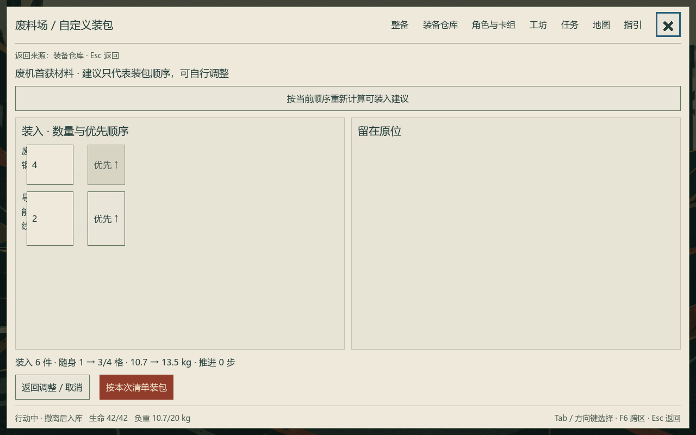
1280×800、标准字号下，左栏的废钢、导能线被挤到极窄位置；数量框紧贴并遮挡名字，栏内却有大量闲置宽度。
影响：在决定装入和留下哪些物品时，玩家难以把数量与物品对应。
建议：使用有明确列宽的“物品｜本次数量｜优先级”行；名称列扩展，数量框保持紧凑；不要用不扩展的自动换行 Label 承担名称列。
验收条件与代码位置
标准与大字号都可同时读到完整物品名、本次数量和优先级；长名称至多两行，不能与数量控件相交。
game/Scripts/ChapterGame.InventoryFlows.cs:42P1Critical · 适配B02
大字号穿戴摘要的名称越出条目

1100×760、150% 字号下，“检修工具手套”换行越出手部卡片，挤到下一件装备区域；装备比较页也出现同样现象。
影响：部位和名称的归属变得不清楚，大字设置反而损害阅读。
建议：让紧凑装备行高度随字体和实际行数增长；窄屏改为横向摘要或收起非当前部位，不能只扩大文字而固定 68 像素卡片。
验收条件与代码位置
四个槽位的名称与图标均在自身条目内；完整名称可见或有明确省略与可访问详情，不能借相邻条目的空间显示。
game/Scripts/ChapterGame.CharacterUi.cs:11P1Warning · 剧情B03
批量交付剧情首屏没有正文
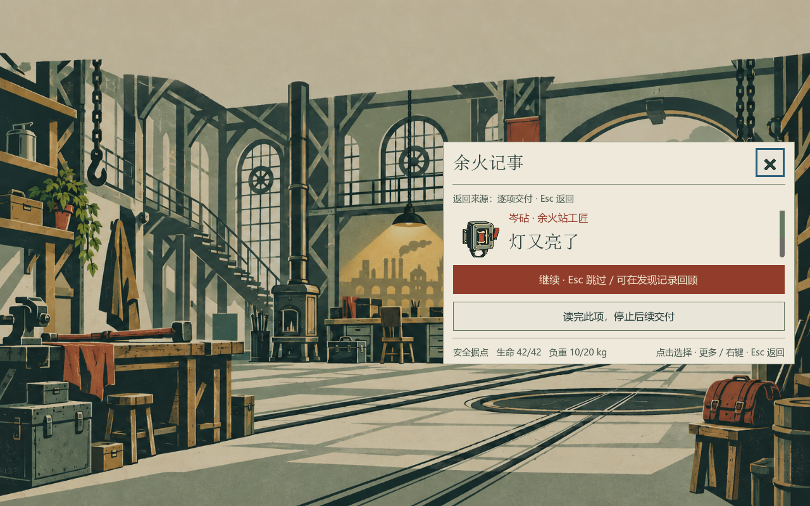
标准尺寸下，剧情窗口被标题、返回来源、人物和两个按钮占据；“灯又亮了”的正文在首屏完全落到滚动区下面。
影响：玩家最容易看到的是继续和停止操作，可能未读到剧情就离开。
建议：为剧情正文保留最低阅读高度；人物标题与正文分配空间，批量停止改成次级控件。窗口高度应计入所有固定区而非仅按正文长度估算。
验收条件与代码位置
1280×800 标准字号首屏至少出现两行正文；1100×760 大字仍有完整正文行和清晰滚动提示，继续按钮不代替阅读区。
game/Scripts/ChapterGame.Panels.cs:29P1Warning · 制作B04
材料成本表的表头与数值对齐方式不一致
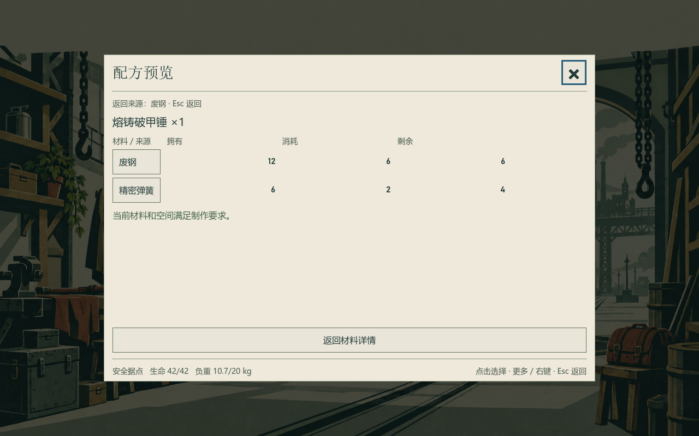
“拥有／消耗／剩余”表头左对齐，宽列中的数字右对齐；数字靠近下一列表头，改装页尤为明显。
影响：读成本时需要反复追踪列边界，可能把拥有量与消耗量看错。
建议：数值列的标题和数字使用同一右边界，限制列宽；材料列扩展，补充轻量行分隔。
验收条件与代码位置
不移动视线到下一列就能对应标题与数值；同一行清楚读出“拥有 12，消耗 6，剩余 6”。
game/Scripts/ChapterGame.WorkspaceUi.cs:122P1Warning · 制作B05
补给缺料以不成立的减法和笼统提示表达
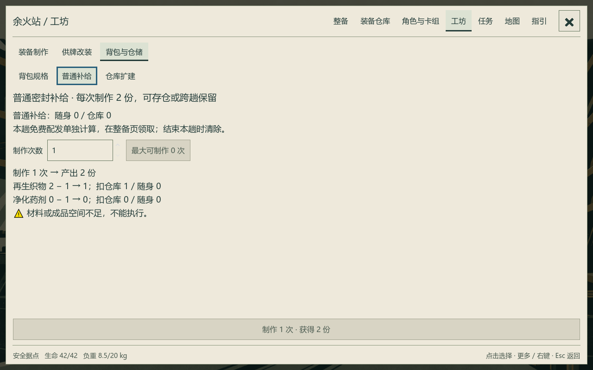
没有净化药剂时显示“0 − 1 → 0；扣仓库 0 / 随身 0”，随后只提示“材料或成品空间不足”。执行按钮确实禁用。
影响：规则没有错误执行，但界面没有明确指出缺哪件、差多少，且公式看似已经扣完。
建议：缺料直接显示“净化药剂：拥有 0／需要 1／缺 1”；分别列出材料、地点、产物容量等实际阻塞原因，并提供已知来源入口。
验收条件与代码位置
玩家无需手算即可说出当前唯一或全部阻塞；没有材料时不展示为合法扣除后的余量。
game/Scripts/ChapterGame.StorageCraftingUi.cs:62P1Warning · 阅读B06
轻量悬浮说明变成大型操作窗口
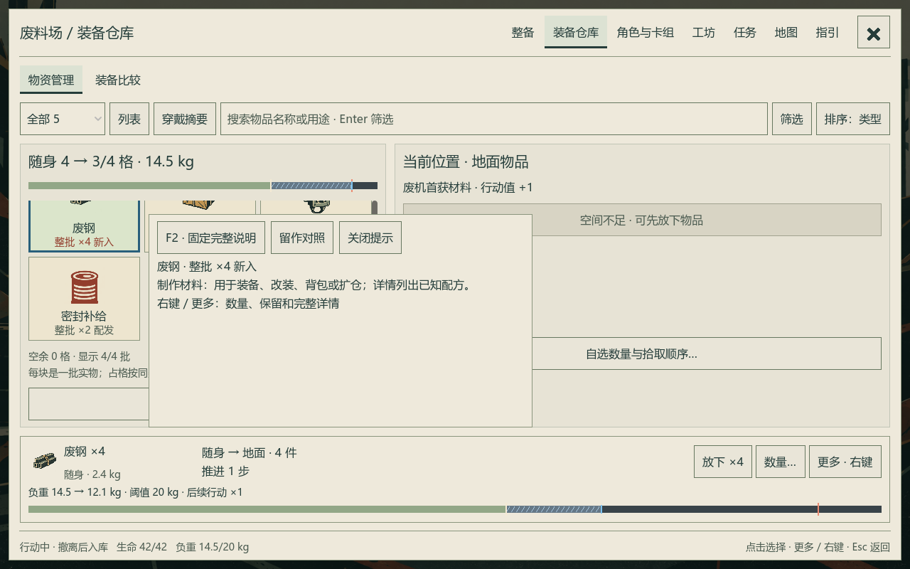
管理页多行提示通常占 540×300，只有少量说明时仍保留大空白和固定／对照／关闭按钮。库存、装备和 720 截图均可见遮挡。FocusEntered 立即显示，鼠标离开但对象仍有焦点时可能继续保留。
影响：为了读一件物品，会挡住邻近候选或容器，打断比较与拖动。
建议：普通提示按内容收缩，先给名称、用途和一句关键后果；固定详情才展开工具栏。悬浮、键盘聚焦、主动固定分别管理生命周期；同一张牌避免同时出现两套阅读层。
验收条件与代码位置
短提示不遮住当前主操作或下一候选；移入可继续阅读、Esc 可关闭；键盘用户仍能主动固定详情。
game/Scripts/ChapterGame.GraphicUi.cs:43P1Warning · 战斗B07
未选牌的预览区常驻占用过多战场
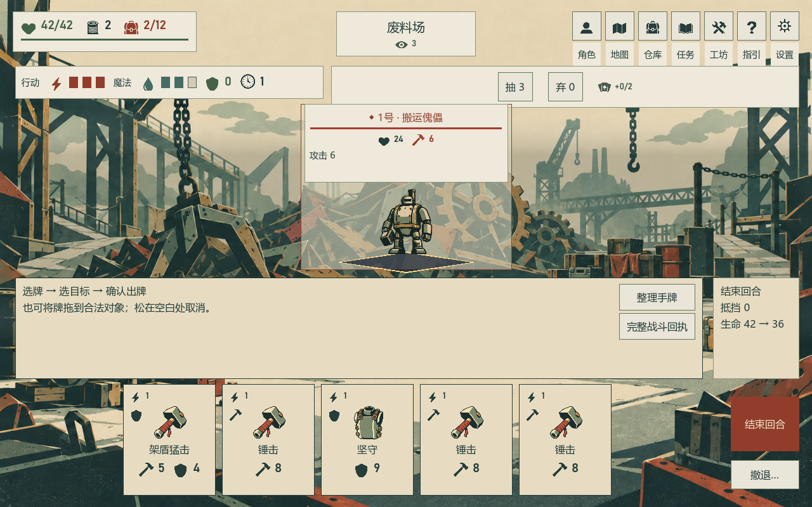
1280×800 下，卡牌预览区固定为 1084×160，仅此一块约占全屏 16.9%；未选牌时只放两行操作说明。右侧还另有 136×160 回合预测，敌人图像在小窗口明显缩小。
影响：视觉焦点落在空说明板和功能按钮，而敌人、意图、手牌之间的联系变弱。
建议：未选牌时将预览收成短条，选牌后展开结果；回合预计失血贴近结束回合按钮；把行动／魔法与手牌放在更近的区域，日志和排序改为次级入口。
验收条件与代码位置
在 1100×760 三敌人状态下，可同时辨认敌人形象、意图、手牌与回合风险；未选牌说明不长期占用完整详情高度。
game/Scripts/ChapterGame.BattleUi.cs:133P1Warning · 适配B08
阅读字号与实际界面缩放的反馈不完整
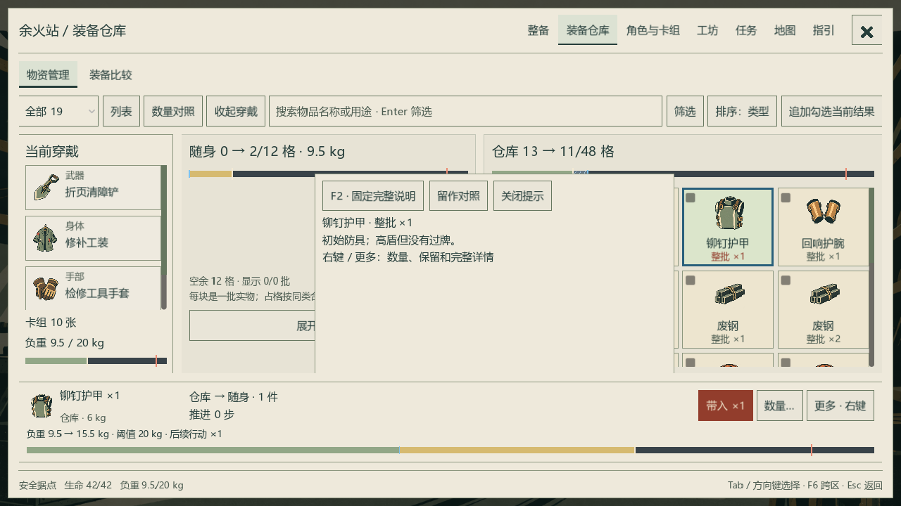
Text 的部分字号随 ReadingScale 放大，Inline 会覆盖为固定字号，普通按钮保持 16。UiScaleFor 还会按 1100×760 基准限制整体缩放：1280×720 上限约 94.7%，1100×760 的 125% 偏好会被限制到 100%。
影响：大字用户仍需读较小的按钮、注释和数值；设置值与实际呈现可能不一致。
建议：定义阅读正文、操作标签、辅助信息的缩放策略并贯穿控件；显示实际生效比例和限制原因；通过重排与折叠适配小屏。
验收条件与代码位置
列出实际像素字号并验证关键内容，不能仅断言设置值；大字模式中的物品、费用、数量和主动作都应可读且不溢出。
game/Scripts/ChapterGame.Ui.cs:23P2Warning · 仓储B09
浏览区被工具栏与固定区挤压，空容器仍占大面积
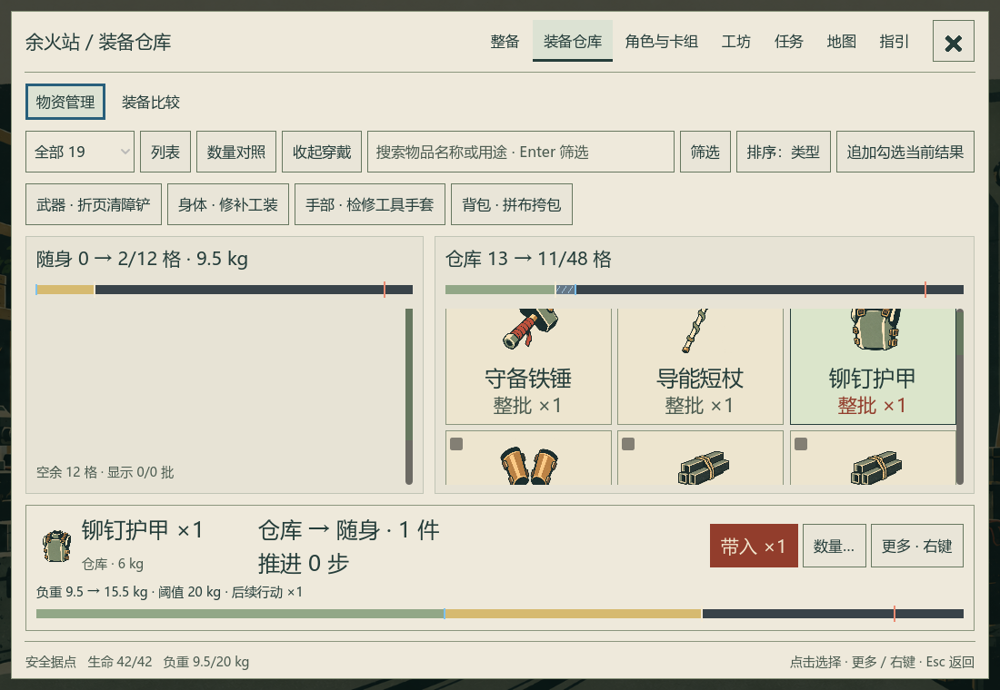
1100 大字并展开穿戴摘要时，仓库可见区域只完整容纳约一行三件；左侧空随身区域保留很大面积。1600 下空容器同样占据大块宽度。
影响：高频整理需要频繁滚动；界面总体宽大却难以同时比较物品。
建议：将低频工具收进整理菜单；按内容与用户选择调整双栏宽度；大字默认采用紧凑列表或数量表，保持两个容器和目的地可辨认。
验收条件与代码位置
使用同一库存夹具比较首屏完整对象数、滚动次数和误选；正文不缩小，主动作仍固定可见。
game/Scripts/ChapterGame.StorageUi.cs:75P2Warning · 仓储B10
真实批次直接铺满网格，物品单位与容量单位不直观
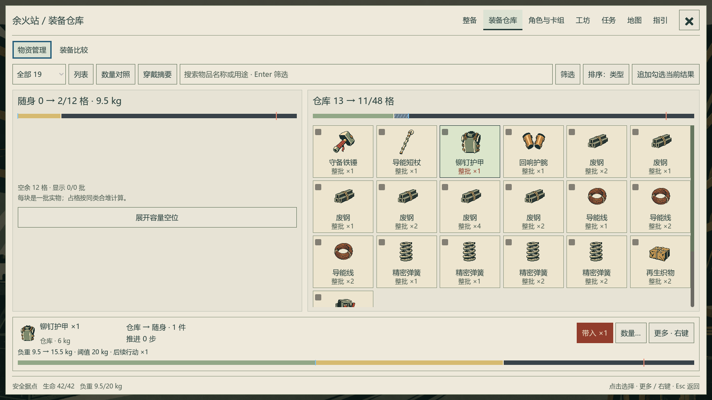
相同废钢、导能线、弹簧以多个同图标批次重复出现；说明写明每块是一批、占格按同类计算，视觉上却仍很像格子背包。
影响：玩家容易把显示图块数当作容量占用，或者为简单转移反复辨认近似批次。
建议：默认按相同规则身份聚合显示总数，展开查看批次；明确区分“件／批／占格”。保留配发、校准、保护与地面来源差异，提交仍用真实批次身份。
验收条件与代码位置
查看一个物品时能直接回答总数和实际占格；聚合不跨越不同来源和规则，不改变拾取费用。
game/Scripts/ChapterGame.StorageUi.cs:143P2Warning · 仓储B11
数量对照表的容器表头会随内容滚走

表头实际存在，但与条目同在 Scroll 中；选择展开批次后，截图中只剩两列数量，容器名称要到下方容量区重新对应。
影响：左右数量属于随身还是仓库需要记忆，长列表中容易看反转移方向。
建议：固定“物品／随身／仓库”表头；展开批次时在来源列保留名称，本次操作数量与批次总量分别标注。
验收条件与代码位置
滚到任意位置都能判断来源、目的地和本次数量；展开后不需要返回列表顶部。
game/Scripts/ChapterGame.StockVisualization.cs:31P2Warning · 交互B12
右键菜单过大，常用与低频动作没有分组
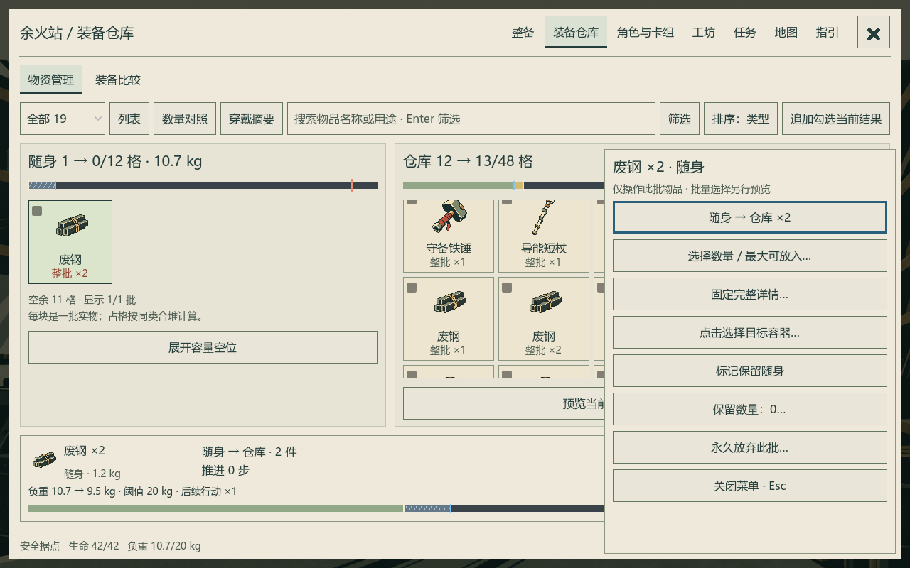
菜单固定约 410×570，占去大块管理页，移动、数量、固定、目标容器、保护、配额、永久放弃等均使用等重按钮。
影响：局部快捷操作的优势被大面积遮挡和逐项扫描削弱。
建议：常用动作置顶，数量与保护归组；永久放弃独立分隔并保留确认。键盘菜单跟随对象，鼠标菜单使用触发事件坐标；无需扩大成完整页面。
验收条件与代码位置
常用移动与数量无需滚动；危险动作与常规动作可区分；保留点击和键盘的等价路径。
game/Scripts/ChapterGame.StockCommands.cs:138P2Warning · 装备B13
换装差异仍被较长的候选说明稀释
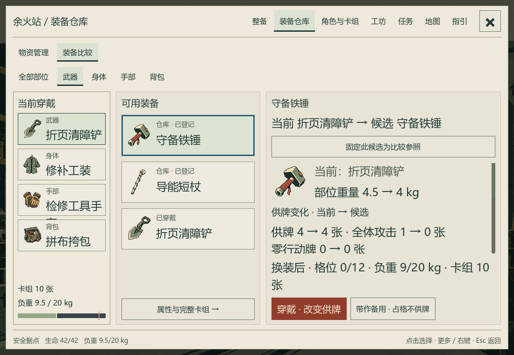
已有当前→候选、重量与供牌差异，但比较区纵向展开、部分信息需滚动；左侧穿戴摘要和中间候选列占据稳定宽度，大字时核心差异空间有限。
影响：需要回答“为什么换它”时，玩家仍需在总数、牌名、说明间拼接。
建议：首先列出增加／失去的牌和关键费用变化，再给重量、格位、旧装备去向；完整候选卡表作为展开详情。
验收条件与代码位置
第一屏能解释换装后失去的能力、获得的能力和能否装下旧装备；不以总牌数相同替代差异。
game/Scripts/ChapterGame.WorkspaceUi.cs:85P2Warning · 卡组B14
卡组页摘要偏重，实际牌表显示偏少
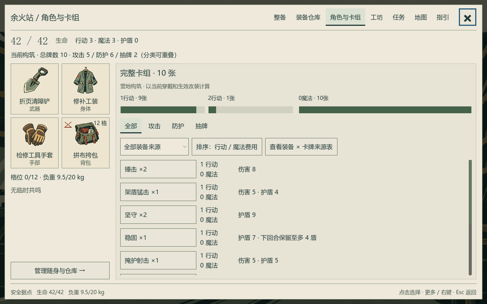
标题、构筑摘要、费用长条、分类和筛选占去大量上部空间；1280 样例首屏约五种完整牌行，1100 更少，重复的 0 魔法费用每行单占一行。
影响：检查构筑时不能快速扫过主要牌种；面积很大的统计未必比具体能力更有用。
建议：压缩摘要为紧凑费用分布，费用同一行显示；常驻牌名、副本、核心效果与条件，来源矩阵作为专项模式保留。
验收条件与代码位置
同一夹具下首屏可比较更多牌种；仍能区分临时牌、试用来源及实际构筑，不删除必要规则。
game/Scripts/ChapterGame.OverviewUi.csP2Warning · 改装B15
不变字段占据差异区，成本与效果分离
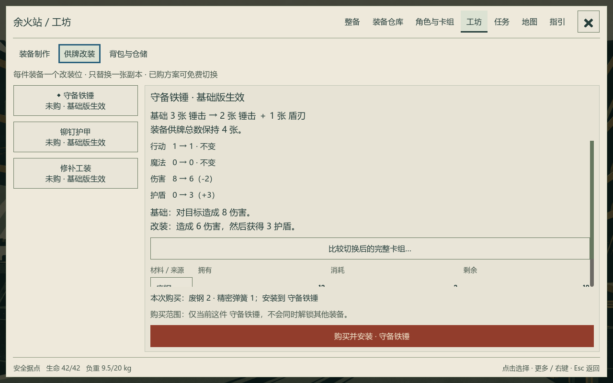
行动 1→1、魔法 0→0 各占一行；基础／改装全文再重复效果，成本表往往被挤出首屏。
影响：玩家为理解一次取舍需要滚动，在效果与支付之间来回看。
建议：默认只突出发生变化的伤害、护盾和替换副本；不变项折叠；将本次成本与变更摘要同时保留。
验收条件与代码位置
不滚动即可读到“少 2 伤害、多 3 护盾、只替换 1 张、付哪些材料”，全部规则仍可展开。
game/Scripts/ChapterGame.ModsUi.csP2Warning · 地图B16
窄屏地图重新编排地点位置
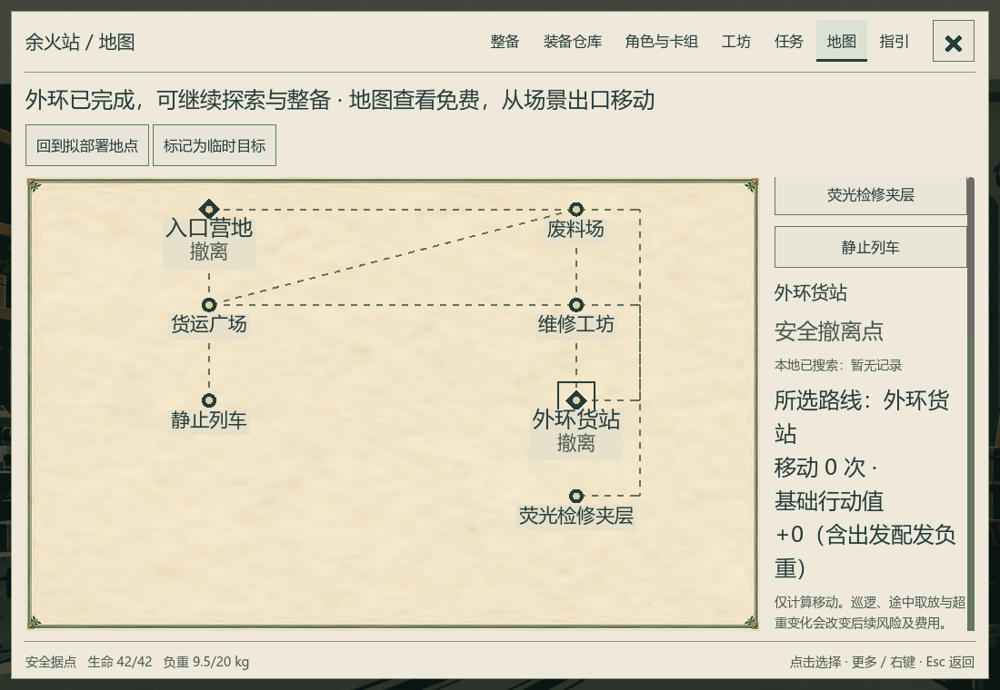
1280 图为对角空间结构，1100 大字图变成两列网络；入口、广场、废料场的相对位置发生明显变化。
影响：改变窗口或字号后，玩家之前建立的地点空间记忆失效。
建议：保留地图拓扑与大体方位，缩放或平移画布；需要列表模式时明确切换，并突出路线与第一步出口。
验收条件与代码位置
改字号、窗口尺寸后，主要地点方位和连线关系稳定；目标与当前位置仍可区分。
game/Scripts/ChapterRouteMap.csP2Warning · 地图B17
大字地图的详情栏太窄
1100 大字下地图仍占大部分横向空间，右栏地点名和路线费用多次换行，地点列表与详情共用滚动区。
影响：图形主体容易看见，但决策必需的路线代价和选中详情读得更慢。
建议：大字或窄屏把选中地点摘要移到地图下方，目录折叠；固定目标、步数、风险说明和返回动作。
验收条件与代码位置
选定目标后不需要在狭窄侧栏上下寻找路线费用；正文不做单字断行。
game/Scripts/ChapterGame.WorkspaceUi.cs:241P2Warning · 导航B18
入口命名与层级不统一
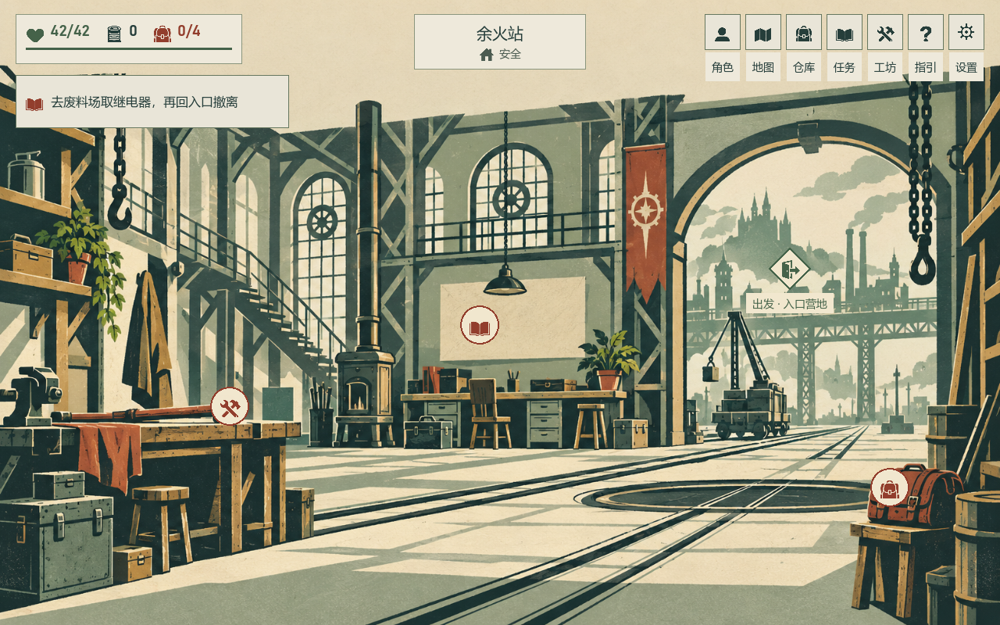
场景入口称“仓库／角色／任务”，管理导航称“装备仓库／角色与卡组／任务”，页内再分物资管理和装备比较；七个顶层入口在多数页持续同等出现。
影响：新玩家需要学习“装备、物资、卡组、整备”的关系；高频工作与低频说明争夺注意。
建议：统一入口名称，围绕“整备出发、物资、构筑、工坊、任务地图”梳理任务路径；保留快捷键，指引与设置降低视觉权重。
验收条件与代码位置
新玩家仅凭名称能预测目的页，跨页后能明确返回来源；不增加额外层级。
game/Scripts/ChapterGame.Panels.cs:47P2Warning · 整备B19
三栏面积与出发决策的内容量不匹配
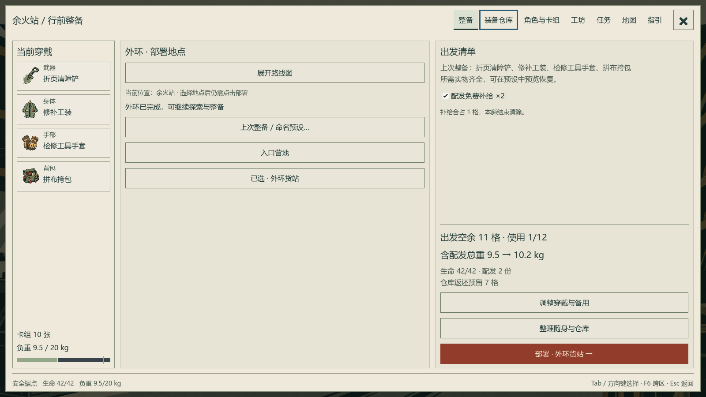
目的地仅两个选择时中栏仍占很宽区域；右栏却同时承载上次整备、配发、容量、重量和出发。大字模式右栏阅读负担更集中。
影响：视觉上平均分栏，实际决策却需要横跨多区，出发清单承担过多内容。
建议：按“去哪里→带什么→当前阻塞→出发”分配空间；目的地用紧凑卡片，将携行和具体阻塞留在主要区域。
验收条件与代码位置
不切页即可说明目的地、出发空格、总负重和必须处理的问题；选择预设不会被误认成已经出发。
game/Scripts/ChapterGame.OverviewUi.cs:40P2Warning · 任务B20
全部交付后仍显示开始与停止交付按钮
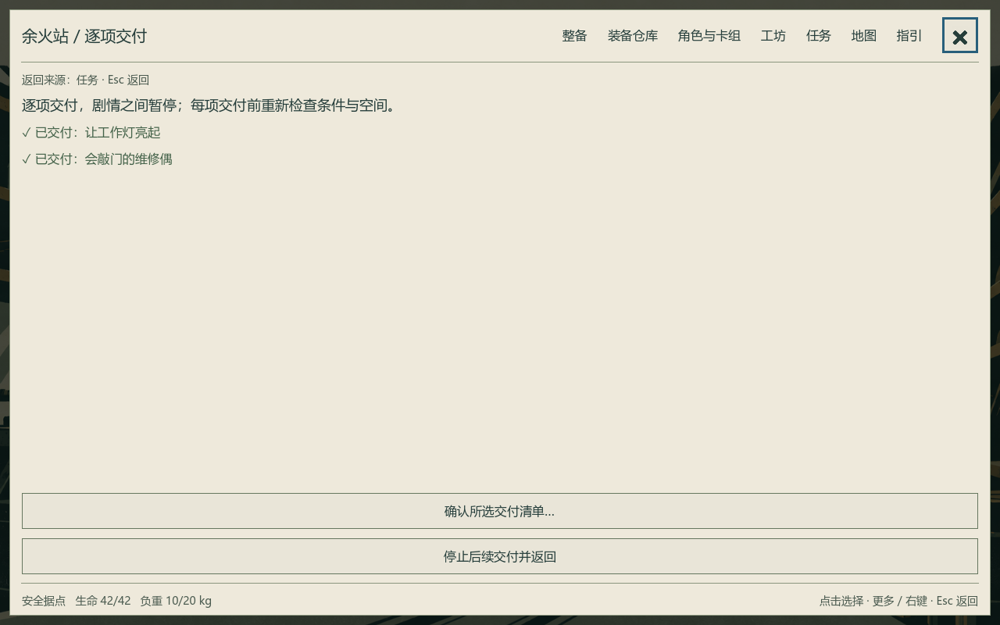
两项均已交付、队列为空时，页面仍有“确认所选交付清单…”和“停止后续交付并返回”；前者点击后只会提示先选任务。
影响：完成状态缺少明确落点，玩家无法从主动作判断流程已结束。
建议：结束态显示“已交付 2 项”和奖励摘要，主动作改为完成／返回任务；仅有合法选择时提供开始交付。
验收条件与代码位置
空队列无看似可启动的提交按钮；暂停、失败、完成三种状态的文案与动作互不混淆。
game/Scripts/ChapterGame.QuestBatch.cs:28P2Warning · 战斗B21
拖牌提交与点击确认的关系、自身牌落点需要更明确
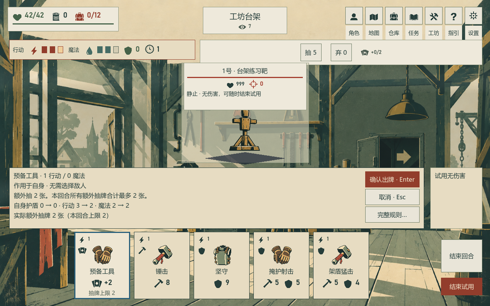
点击牌进入预览，再点确认；拖到目标直接执行。自身牌的接收区绑定在左上资源面板，未提供常驻的自身角色目标。
影响：熟悉点击流程后，未必能猜到自身牌应该拖到哪里；直接提交的手势边界需要学习。此项是依据代码与画面的风险判断，未测真人失败率。
建议：拖动时高亮全部合法落点并显示“松开出牌”；自身牌提供靠近手牌的明确接收区；保留选择→确认路径及取消行为。
验收条件与代码位置
首次使用拖动的人可以发现合法自身落点；无效释放、Esc 和右键取消均不消费资源，点击拖动不会双重提交。
game/Scripts/ChapterGame.HandInteraction.cs:53P2Warning · 设置B22
排序、缩放等多值选项依赖循环按钮
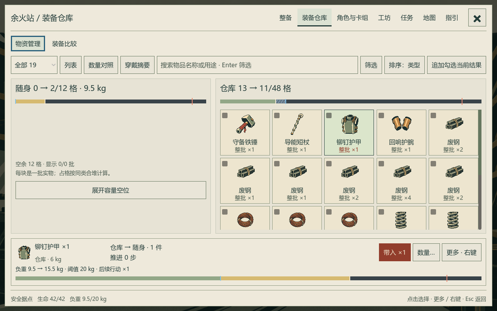
仓储排序按类型→名称→数量→重量循环；悬浮延迟、UI 大小和反馈速度也以按钮轮转，当前按钮没有展示全部可选值。
影响：难以预判下一状态，想回到某项需要多次切换；影响重复整理和设置探索。
建议：将多值设置改为下拉或分段选择；二值开关与普通动作分开，阅读设置提供即时示例。
验收条件与代码位置
目标值可一次明确选择，当前值和生效状态一致；键盘可完成操作。
game/Scripts/ChapterGame.Preferences.cs:29P2Opportunity · 叙事B23
奖励与回营结算的信息正确，情绪表达偏弱
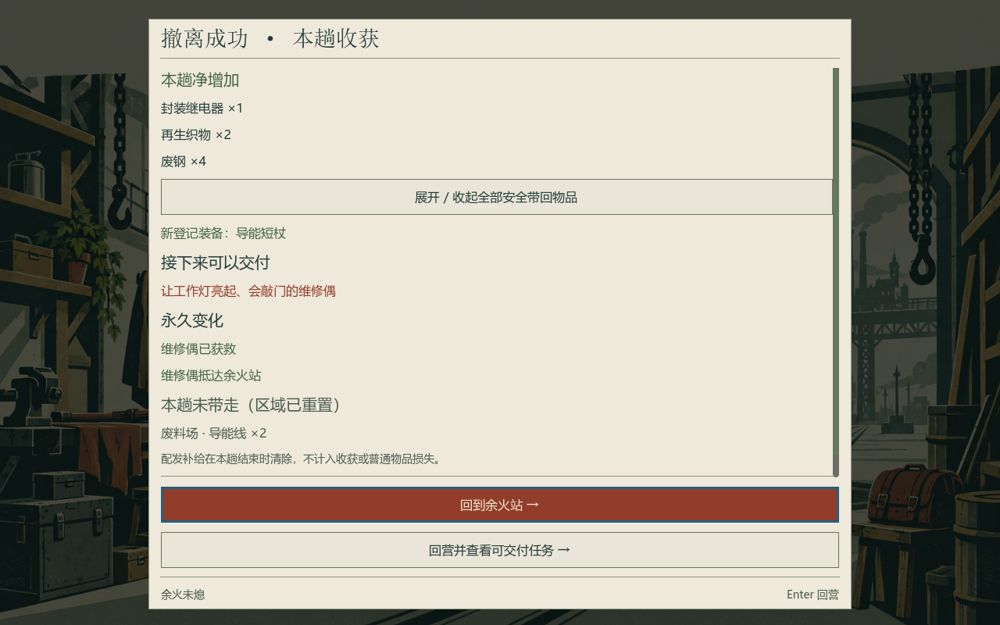
净收益、未带走、永久变化均已分清，但主要以文字清单呈现；启动页和结算页沿用管理窗口的大空白结构。
影响：玩家获得装备、救援和点亮基地的高光时刻，容易被读成事务报告。
建议：突出少量关键收获的实物图和基地变化；详情仍可展开，快捷跳过保留；回营后的可交付任务成为清楚的下一步。
验收条件与代码位置
首屏识别本趟最重要收获和新开放内容；动效可跳过，结算数值与规则一致。
game/Scripts/ChapterGame.InventoryUi.csP2Opportunity · 视觉B24
管理控件过于同质，游戏识别度主要靠背景
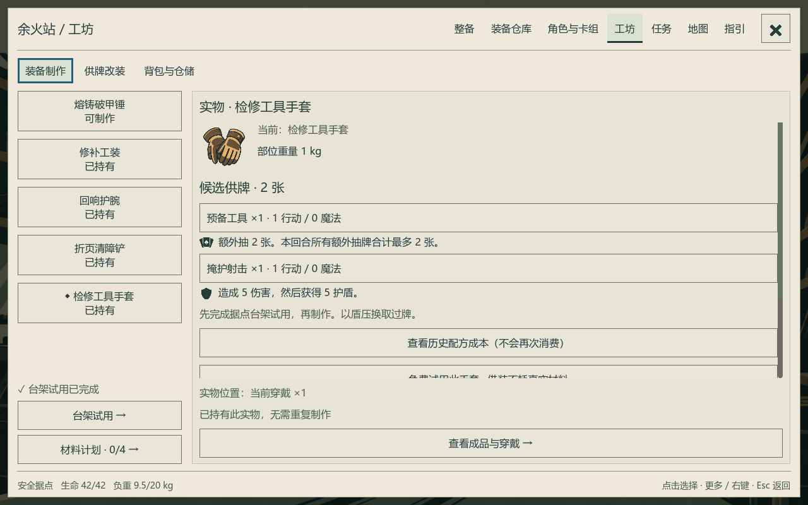
场景木刻风鲜明，管理页却大面积使用同类浅底直角框；候选、说明入口和次级动作经常同宽同高。不同卡牌也常复用同一装备插画。
影响：页面整齐但层级偏平，扫描速度和不同能力的视觉记忆仍有改善空间。
建议：保留纸色、墨绿和朱红，建立标题／数据／操作三级权重；用图标、短标签与少量材质区分功能，卡牌以稳定类别标记辅助识别。
验收条件与代码位置
去掉文字仍能分辨选择区、详情区与主动作；颜色以外仍有形状或文字提示，不让装饰降低对比。
game/Scripts/ChapterGame.Ui.cs:33P2Opportunity · 探索B25
默认图标简洁，但关键物件的发现仍可加强

场景保留了清楚的出口菱形和动作圆形，常显标签模式也可用；然而普通任务交互主要靠图标，需要看左上目标再找场景对象。
影响：新玩家可能在故事物件、采集和战斗入口之间来回试探。
建议：首次或追踪任务时，只让当前关键物件常显短标签；交互后回到简洁状态。继续保留 Alt／设置显示全部标签。
验收条件与代码位置
玩家能说出下一步要点哪个物件；标签不遮挡出口和相邻目标，额外信息不提前泄露未发现内容。
game/Scripts/ChapterGame.SceneInformation.csP1Warning · 验收B26
已有自动验证主要保证可操作边界，未覆盖阅读质量
本轮所有专项通过，但 B01、B02、B03 仍可在截图中直接看到。现有断言检查外框、焦点、按钮和部分可见行，没有验证每个文字矩形、正文首屏或语义对齐。
影响：把 implemented 或套件通过当作视觉验收，会反复保留已出现的问题。
建议：按页面建立关键文字、首屏内容与遮挡验收；自然输入路径和截图逐项对应；为上述实际故障增加针对性检查。
验收条件与代码位置
同一轮交付同时给出功能结果、截图检查结论与未覆盖项；真人理解测试单独记录，不能以模拟手柄替代真实设备。
game/Scripts/ChapterVerification.cs:277